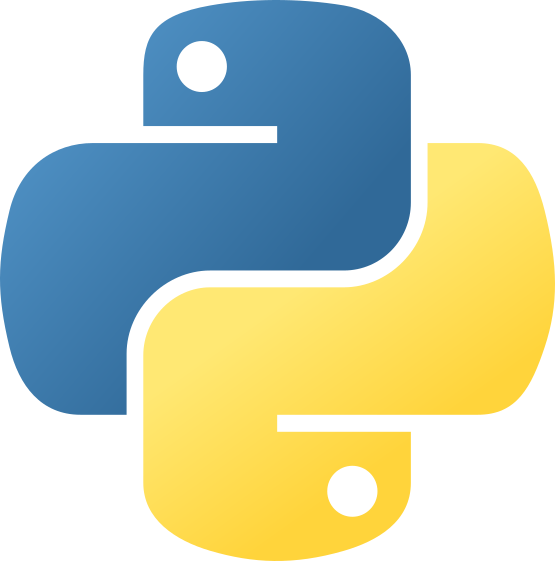
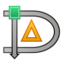
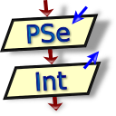

Herramientas de la carrera.
A lo largo de la carrera utilizamos diferentes herramientas para aprender, desarrollar proyectos y trabajar con datos.
Estas son algunas de las herramientas que utilizamos durante nuestro aprendizaje.

Python
Programación y análisis de datos.
Visual Studio Code
Desarrollo y edición de nuestros proyectos.
SQL Server
Diseño y gestión de bases de datos.
XAMPP
Desarrollo y pruebas de aplicaciones web.

Dia
Diseño de diagramas y modelos de datos.

PSeInt
Trabajo y aprendizaje de programación.